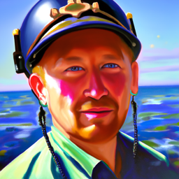
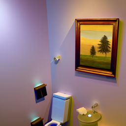
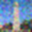
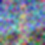

Noisy Campanile at t=250

Noisy Campanile at t=500

Noisy Campanile at t=750
In Part A of this project, I experimented with diffusion models, implemented sampling loops, inpainting, image-to-image translation, and created visual illusions and hybrid images using pre-trained DeepFloyd IF diffusion models.
I created a Hugging Face account, accepted the license for DeepFloyd IF-I-XL-v1.0, and generated prompt embeddings for my own text prompts.
I generated embeddings for several creative prompts and selected three prompts for initial image generation:
Prompt 1 Output: a painting of an airplane runway

Prompt 2 Output: an oil painting of an among us crew mate

Prompt 3 Output: an oil painting of skibidi toilet
In this section I implemented the im_noisy = forward(im, t) function and added noise to the campanile at 3 different levels [250, 500, 750]
Noisy Campanile at t=250
Noisy Campanile at t=500
Noisy Campanile at t=750
Noisy Campanile at t=250
Noisy Campanile at t=500
Noisy Campanile at t=750
Noisy Campanile at t=250

Noisy Campanile at t=500

Noisy Campanile at t=750
Using strided timesteps I implemented iterative denoising.

Iterative denoising example
Sample 1 from random noise
Sample 2 from random noise
Sample 3 from random noise
Sample 4 from random noise
Sample 5 from random noise
Improved image quality using CFG with a scale of 3.0.
CFG Sample 1
CFG Sample 2
CFG Sample 3
CFG Sample 4
CFG Sample 5
Used SDEdit for image editing and applied different noise levels to the Campanile and custom images.
Campanile i_start=1
Campanile i_start=3
Campanile i_start=5
Web Image - Avocado edits
Hand-Drawn Image 1 edits
Hand-Drawn Image 2 edits
Campanile Inpainting
Custom Image 1 Inpainting
Custom Image 2 Inpainting
Campanile Text-Conditional Translation
Old Man / People Around Fire Illusion
Second Illusion Example
Hybrid Image Example 1 (Skull & Waterfall)
Hybrid Image Example 2